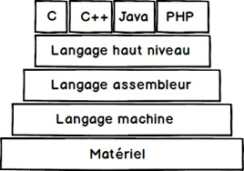
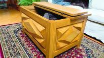

Mes études...
Présentement j'étudie pour avoir un AEC en "Développement Web Front End" au Cégep de Trois-Rivières.
Wikipedia HTML
Wikipedia CSS3
Wikipedia JavaScript
The World's Largest WEB Developer Site W2Schools
StackOverFlow For developers, by developers

J'ai aussi un AEC en Technique de Programmation que j'ai suivis au Cégep de Victoriaville.
Wikipedia
Le langage RPG
Wikipedia Le langage Delphi
Wikipedia Le langage Turbo Pascal
Wikipedia Le langage Assembleur
Wikipedia Le langage Machine
Wikipedia Le langage Visual Basic
Wikipedia Le langage Visual Basic .Net
Wikipedia Le langage C
Wikipedia Le langage C++
J'ai aussi suivi un cours comme camionneur en équipement lourd et surdimensionné.
Transport Watson pour qui j'ai travaillé
Transprt Robert pour qui j'ai travaillé
Transport Chainé pour qui j'ai travaillé
J'ai aussi un AEC comme Technique Courtier en Valeur Immobilière au Cégep de St-Jean.
Le Permanent pour qui j'ai travaillé
REMAX pour qui j'ai travaillé

J'ai aussi un cours en Meuble et Gabarit, au Cégep de Victoriaville.
Cégep de
Vitoriaville ou je suis allé étudier
- École Primaire Mt-Seigneur Forjette
- École Primaire St-Joseph
- Polyvalente Mt Seigneur Parent
- Polyvalente André-Laurendeau
- Cégep de Trois-Rivières (AEC Développement WEB FrontEnd)
- Cégep de Victoraville (Technique en Meuble et Gabaris) et (Science Informatique et Programmation)
- Cégep de St-Jean (Science Humaine et Technique Courtier En Valeur Mobilière)
Retour à la page de Présentation